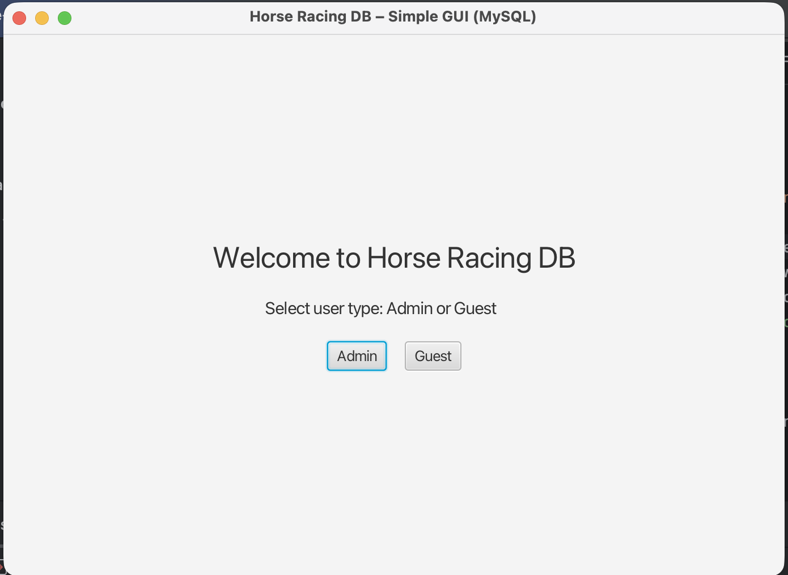
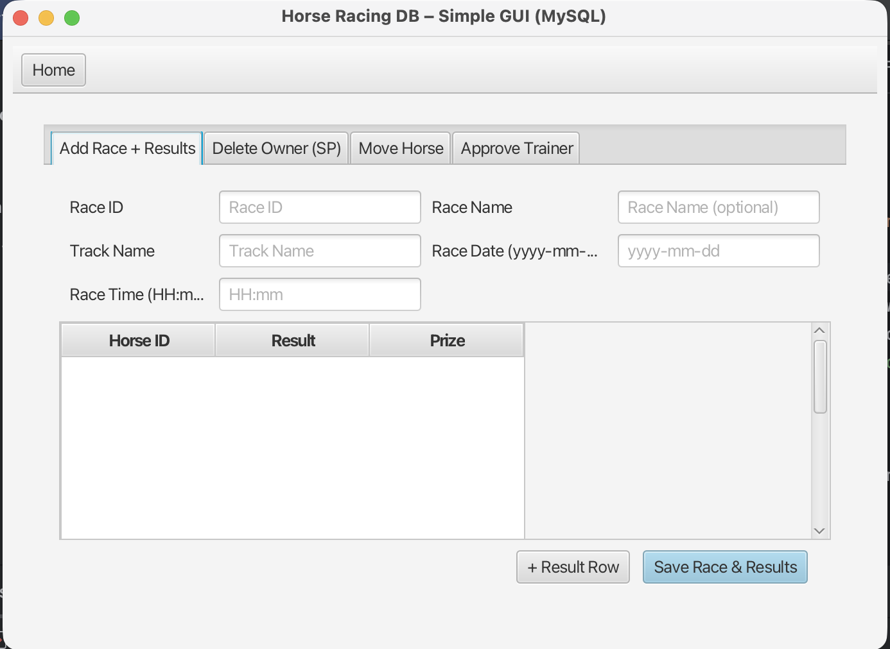
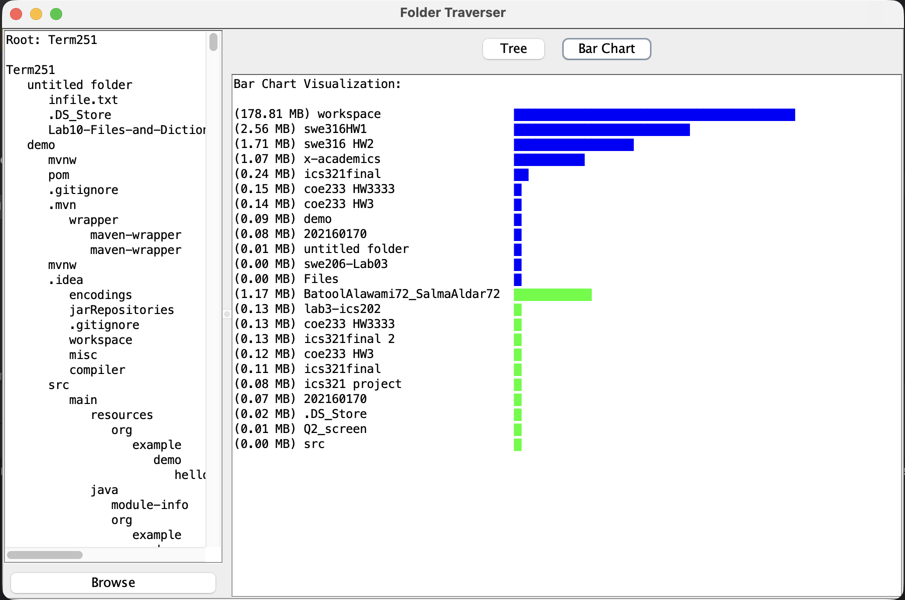

Loading Inspiration✨
I’m Batool Alawami, a Software Engineering student at King Fahd University of Petroleum & Minerals (KFUPM), passionate about building modern, secure, and user-centered digital solutions.
My interests include Web Development, Cybersecurity, and UI/UX Design, where I focus on creating systems that combine functionality, protection, and seamless interaction.
I enjoy developing business systems and smart applications that improve productivity and efficiency. My goal is to grow as a Full-Stack Developer and contribute to building scalable and impactful software solutions.
Building smart, secure, and user-focused digital solutions.
Started my journey at KFUPM as an Industrial Engineering student.
Began programming in Python and developed my interest in software.
Changed my major to Software Engineering and started programming in Java.
Advanced in software engineering and gained a deeper understanding of the software development lifecycle.
Beginning a new professional journey through training with SLB and gaining industry experience.
Technical skills
Soft skills
Designed and implemented a relational database system...


Developed a hierarchical folder management application...
